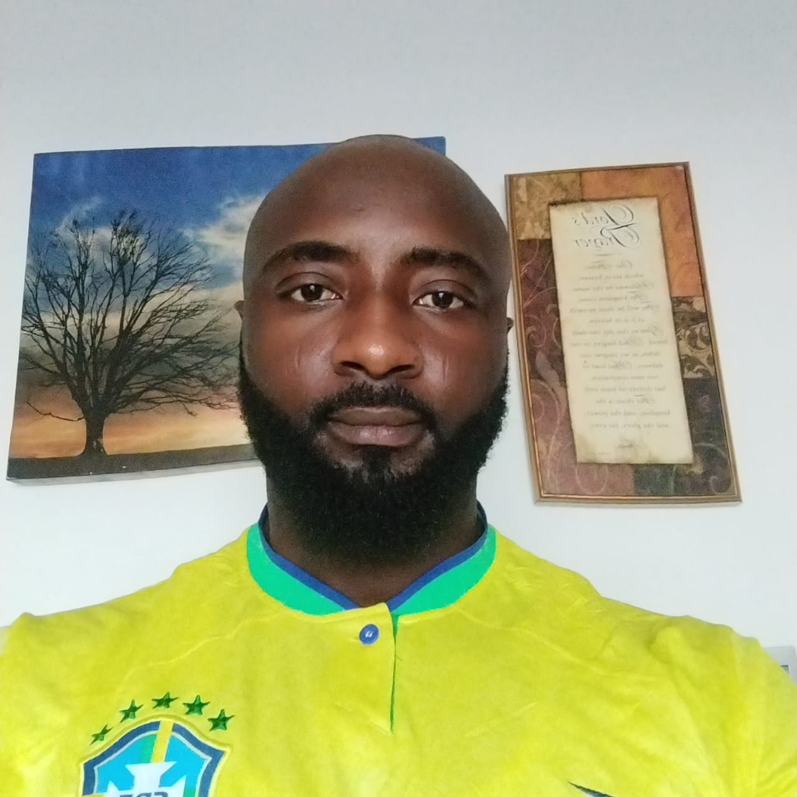

Usman Momohsani

- Contact +234 7062022864 /usani501@gmail.com
OBJECTIVE
I am high achieving professional seeking to be involved with a challenging
position that offers the opportunity for growth and development, as an
effective team player with innovative contribution to business strategies and
to enhance the need for optimum achievement of the organizational goals.
Proffesional Skills
- Microsoft Office Suit (office 365) ★★★★
- Familiarity with networking monitoring tools(PRTG, NETBOSS,
ZABBIX, UNMS, DUDE, Winbox) ★★★★
- Comprehensive knowledge of helpdesk ticketing apps (OWS and
Dingtalk).★★★★
Additional Knowledge
- Network Model
- IP Addressing
- Radio Frequency
- Antenna
- OSPF
WORK EXPERIENCE
Timeless Telecom Limited Network Operating Center 2023 Till Date
- Support Engineer
- Excellent troubleshooting
- Resolving Technical problem with Wan and Lan
- Technical support level 2
- Customer Relation, Face to Face interaction to Client Satisfaction
- Escalate unresolved issue to appropriate department
MACTAY CONSULTING Sim Registration and verification MTN 2020/2022
- Responsibilities. Ensure the authenticity of several data using customer life circle application.
2019-Present ENTERPRISE SUPPORT AGENT-Airtel Nigeria Limited
- Responsible for managing more than 2,000 enterprise customer with
over 100 fiber and wireless links, each including E1 PRI service.
- Monitor and resolve queries from Airtel enterprise customer on internet
links issues nationwide as well as customers resident in Congo DRC,
Cameroon and Ghana through Collaboration with ISP OEM partners via
integrated web platform called operating web system (OWS)
- Prepare and ad hoc report for management review and carry out
statistical / data compilation as directed, to improve service.
- Responsible for collating, processing and access request for ISP
customers who want to visit Airtel POP site for last-mile equitment
maintenance or troubleshooting. This is done sending collated requests
to the Area Technical Officer (ATO) in charge for the site for approval.
- Perform incidence escalation process in compliance with approved procedure
and policies.
- prioritize operational issue as a real-time point of contact and provide
high-level responses in an efficient manner.
2018-2019 CUSTOMER CARE (CALL CENTER)-Multichoice Nigeria
- Contribute to the sustenance of the Multichoice brand by providing top-
notch customer care on all multichoice's premier customers through
outbound
- Responsible for telemarketing up and cross selling multichoice's
product and services to grow customer spend usage of service.
- Communicating with customers through various channels
- Inform customers on deals and promotion
- Compile reports on overall customer satisfaction
EDUCATION
Bachelor of Science: Biochemistry
Ambrose Ali University Ekpoma Edo State
Certification
Software Engineering in view.